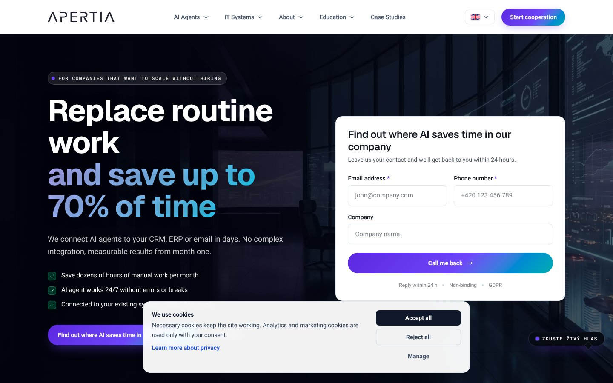
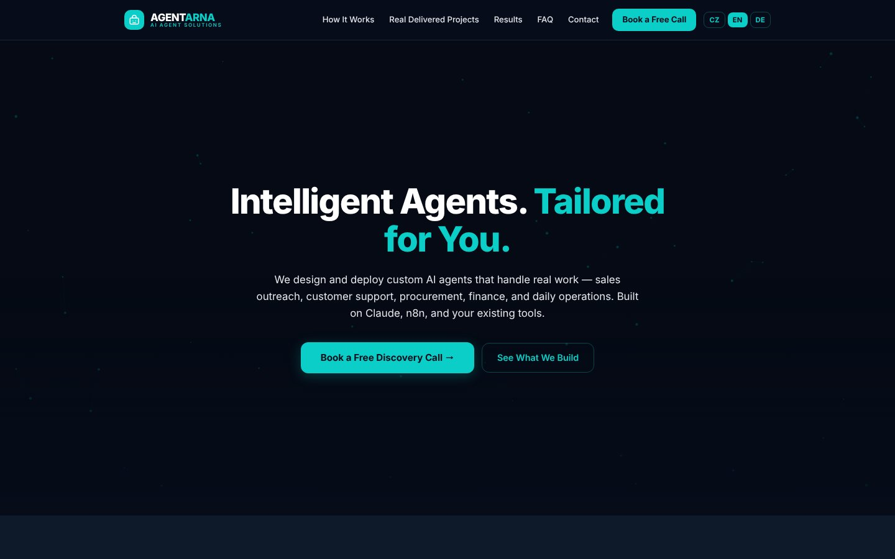
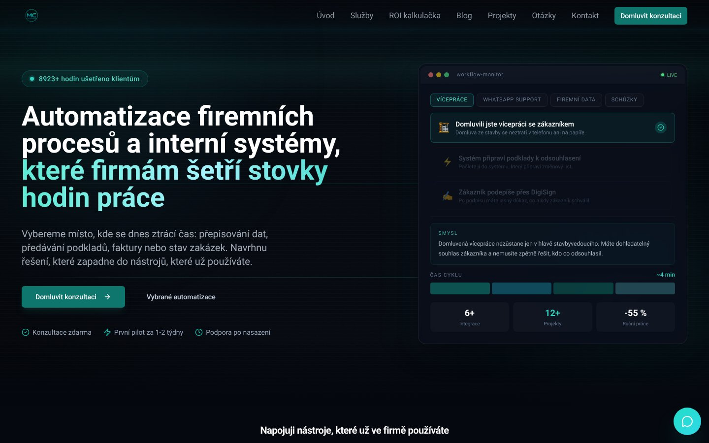

Co udělat
- Přidejte na domovskou stránku sekci „Případové studie“ s jasným CTA a 2–4 konkrétními ukázkami výsledků.vysoká prioritaKonkurent tím na domovské stránce posiluje důvěru; bez této komunikace přicházíte o část poptávek, které potřebují důkaz před kontaktem.podle apertia.ai
- Zviditelněte na domovské stránce integrace a API jako samostatný blok s jasným popisem, co to klientům umožní (např. napojení na jejich systémy).vysoká prioritaNa domovské stránce konkurenta se integrace/API nekomunikují; když to budete mít jasně a prominentně, posílíte diferenciaci a zrychlíte kvalifikaci poptávek.podle agentarna.com
- Vypíchněte na domovské stránce dostupnost a SLA (stručně: co garantujete a pro koho) a umístěte to blízko hlavní nabídky.vysoká prioritaKonkurent to na domovské stránce neuvádí; pro firemní služby je to silný signál spolehlivosti a může rozhodovat ve výběru dodavatele.podle agentarna.com
- Vypište na domovské stránce konkrétní SLA a dostupnost podpory (reakční doby, kanály, rozsah).vysoká prioritaMáte zde jasnou výhodu oproti konkurentovi, který SLA na domovské stránce nekomunikuje, a u služeb to přímo zvyšuje důvěru.podle automatizacesai.cz
- Zaveďte na domovské stránce newsletterový odběr (krátký formulář + příslib hodnoty) a propojte ho s hlavními CTA.střední prioritaKonkurent sbírá leady i mimo okamžitou poptávku; vy tím snížíte odchodovost a zvýšíte počet kontaktů z návštěv, které se jinak neozvou.podle apertia.ai
apertia.ai
https://apertia.ai

Apertia.ai na domovské stránce prezentuje kompletní IT řešení „na jednom místě“ (AI agenti, ERP/CRM, weby, výrobní a skladové systémy) s důrazem na úsporu času až 70 % a rychlou reakci „do 24 hodin“. Oproti vám na domovské stránce navíc komunikuje případové studie a sběr kontaktů přes newsletter, zatímco vy naopak vedete tím, že na domovské stránce komunikujete dostupnost a SLA, což u nich vidět není.
| Atribut | Vy | Oni | Verdikt |
|---|
| Platební metody | karta | prevod | shoda |
| Integrace a API | ano | ano | shoda |
| Dostupnost a SLA | ano | ne | vedete |
| Ceník na webu | ne | ne | shoda |
| Případové studie | ne | ano | ztrácíte |
| Certifikace | ne | ne | shoda |
| Rezervace termínu online | ne | ne | shoda |
| Telefon v hlavičce | ne | ne | shoda |
| Sociální důkaz | recenze | hodnoceni | shoda |
| Chat na webu | ne | ne | shoda |
| Newsletter | ne | ano | ztrácíte |
| Jazykové verze | — | — | nezměřeno |
Nezobrazujeme atributy, které pro typ webu „služby" nedávají smysl (skryto: 6).
Cenové pásmo — vy: 490–1990 Kč (medián 990, 3 cen) · oni: 7000–300000 Kč (medián 35000, 8 cen). Popisný údaj, neporovnává se jako verdikt.
Kde ztrácíte
- Případové studie: oni ano, vy ne
- Newsletter: oni ano, vy ne
Kde vedete
- Dostupnost a SLA: vy ano, oni ne
První měření — příště se tenhle stav porovná a uvidíte, co se změnilo.
Co s tím
- Konkurent staví domovskou stránku na silném slibu úspory času a na důkazech formou případových studií; tím si zjednodušuje získání důvěry u služeb. Vy si udržte a více vytěžte výhodu komunikace dostupnosti a SLA, protože to na jejich domovské stránce vidět není. Nejrychlejší posun proti nim uděláte doplněním případových studií a zavedením newsletteru přímo na domovské stránce, aby vám neutíkaly „teplé“ návštěvy bez kontaktu.
agentarna.com
https://agentarna.com

Agentarna.com na domovské stránce komunikuje služby „AI automatizace & custom AI agenti pro firmy“ a zmiňuje technologie (Claude, n8n, Make, OpenAI) s příslibem úspory hodin práce týdně a CTA na bezplatnou konzultaci. Oproti nim na domovské stránce vedete v tom, že komunikujete platbu kartou, integrace/API, dostupnost a SLA a také sociální důkaz ve formě recenzí, zatímco u konkurenta tyto prvky na domovské stránce vidět nejsou.
| Atribut | Vy | Oni | Verdikt |
|---|
| Platební metody | karta | — | vedete * |
| Integrace a API | ano | ne | vedete |
| Dostupnost a SLA | ano | ne | vedete |
| Ceník na webu | ne | ne | shoda |
| Případové studie | ne | ne | shoda |
| Certifikace | ne | ne | shoda |
| Rezervace termínu online | ne | ne | shoda |
| Telefon v hlavičce | ne | ne | shoda |
| Sociální důkaz | recenze | — | vedete * |
| Chat na webu | ne | ne | shoda |
| Newsletter | ne | ne | shoda |
| Jazykové verze | — | — | nezměřeno |
* Údaj jsme našli jen u jedné strany. Měříme domovskou stránku — chybějící údaj znamená, že se na ní nekomunikuje, ne že neexistuje.
Nezobrazujeme atributy, které pro typ webu „služby" nedávají smysl (skryto: 6).
Cenové pásmo — vy: 490–1990 Kč (medián 990, 3 cen) · oni: nezměřeno. Popisný údaj, neporovnává se jako verdikt.
Kde vedete
- Platební metody: vy karta, oni —
- Integrace a API: vy ano, oni ne
- Dostupnost a SLA: vy ano, oni ne
- Sociální důkaz: vy recenze, oni —
První měření — příště se tenhle stav porovná a uvidíte, co se změnilo.
Co s tím
- Konkurent staví messaging na „AI agentech a automatizacích na míru“ a opírá ho o konkrétní technologie a příslib úspory času; to je dobrý benchmark pro srozumitelnost nabídky na první obrazovce. Vaše výhody jsou na domovské stránce hlavně v důvěryhodnosti a „enterprise“ signálech (integrace/API, dostupnost a SLA) a v recenzích — tyto prvky držte co nejvíc viditelné a propojte je s jasným benefitem. U konkurenta se na domovské stránce neobjevuje ceník, případové studie ani certifikace; pokud je budete chtít odlišit, dává smysl je komunikovat až ve chvíli, kdy je budete mít připravené a ověřené.
automatizacesai.cz
https://automatizacesai.cz

Konkurent automatizacesai.cz na domovské stránce komunikuje služby v oblasti automatizace firemních procesů, integrací a interních systémů pro české firmy a opírá se o přímý kontakt (e-mail, telefon) a obsahové sekce jako Blog/Projekty/ROI kalkulačka. Oproti vám na domovské stránce nekomunikuje dostupnost a SLA ani sociální důkaz (recenze), zatímco vy tyto prvky na domovské stránce máte; v integracích a API jste v paritě (oba komunikujete „ano“).
| Atribut | Vy | Oni | Verdikt |
|---|
| Platební metody | karta | — | vedete * |
| Integrace a API | ano | ano | shoda |
| Dostupnost a SLA | ano | ne | vedete |
| Ceník na webu | ne | ne | shoda |
| Případové studie | ne | ne | shoda |
| Certifikace | ne | ne | shoda |
| Rezervace termínu online | ne | ne | shoda |
| Telefon v hlavičce | ne | ne | shoda |
| Sociální důkaz | recenze | — | vedete * |
| Chat na webu | ne | ne | shoda |
| Newsletter | ne | ne | shoda |
| Jazykové verze | — | — | nezměřeno |
* Údaj jsme našli jen u jedné strany. Měříme domovskou stránku — chybějící údaj znamená, že se na ní nekomunikuje, ne že neexistuje.
Nezobrazujeme atributy, které pro typ webu „služby" nedávají smysl (skryto: 6).
Cenové pásmo — vy: 490–1990 Kč (medián 990, 3 cen) · oni: 20000–75000 Kč (medián 47500, 2 cen). Popisný údaj, neporovnává se jako verdikt.
Kde vedete
- Platební metody: vy karta, oni —
- Dostupnost a SLA: vy ano, oni ne
- Sociální důkaz: vy recenze, oni —
První měření — příště se tenhle stav porovná a uvidíte, co se změnilo.